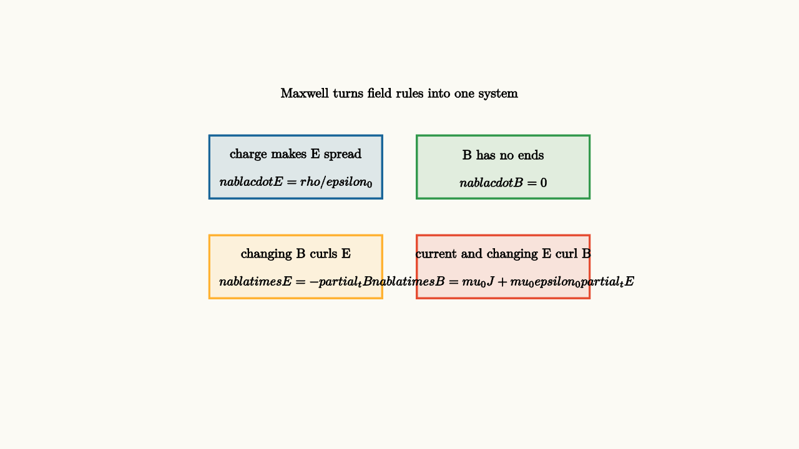

Maxwell Equations Make Light Possible
Electricity and magnetism can look like a cabinet full of separate rules. Coulomb's law describes forces between charges. Circuits have voltage and current. Magnets push moving charges sideways. Faraday's law says changing magnetic flux creates circulating electric fields. Maxwell's equations gather these rules into one field theory.
In integral form, the four equations are
Each equation says something visual. Electric field lines begin and end on charge. Magnetic field lines form loops. Changing magnetic flux curls electric fields. Current and changing electric flux curl magnetic fields.

source
background = [0.985, 0.98, 0.955, 1]
camera = Camera(5.2b)
let Card = |x, y, label, formula, col| block {
. fill{alpha{0.13} col} stroke{col, 2} center{[x, y, 0]} Rect([2.25, 0.82])
. center{[x, y + 0.16, 0]} Text(label, 0.62)
. center{[x, y - 0.2, 0]} Tex(formula, 0.60)
}
mesh grid = block {
. Card(-1.35, 0.75, "charge makes E spread", "\\nabla\\cdot E = \\rho/\\epsilon_0", BLUE)
. Card(1.35, 0.75, "B has no ends", "\\nabla\\cdot B = 0", GREEN)
. Card(-1.35, -0.55, "changing B curls E", "\\nabla\\times E = -\\partial_t B", ORANGE)
. Card(1.35, -0.55, "current and changing E curl B", "\\nabla\\times B = \\mu_0J+\\mu_0\\epsilon_0\\partial_tE", RED)
. center{[0, 1.7, 0]} Text("Maxwell turns field rules into one system", 0.62)
}
"four field rules"
play Fade(0.7)The second term in the last equation is Maxwell's famous addition. Ampere's original law said currents curl magnetic fields. Maxwell noticed a problem in situations like a charging capacitor. Current flows in the wires, yet no conduction current crosses the gap between the capacitor plates. The magnetic field around the circuit cannot suddenly vanish in the gap. The changing electric field between the plates acts as the missing source. This term is called displacement current.
The wave hiding in the equations
In empty space, far from charges and currents, the equations simplify. A changing electric field curls a magnetic field. A changing magnetic field curls an electric field. Each field can regenerate the other as the pattern travels.
The resulting wave speed is
That value matches the speed of light. Maxwell's theory revealed light as an electromagnetic wave.
In an electromagnetic wave, the electric field, magnetic field, and direction of travel are mutually perpendicular. If the wave travels in the $x$ direction, the electric field might oscillate in the $y$ direction while the magnetic field oscillates in the $z$ direction.
source
param phase = 0.0
background = [0.985, 0.98, 0.955, 1]
camera = Camera(5.0b)
let Wave = |phase| block {
. stroke{GRAY, 2} Line(start: [-2.8, 0, 0], end: [2.8, 0, 0])
. stroke{BLUE, 3} ExplicitFunc(|x| 0.55 * sin(2.3 * x + phase), [-2.6, 2.6, 140])
. stroke{GREEN, 3} ExplicitFunc(|x| -0.55 * sin(2.3 * x + phase), [-2.6, 2.6, 140])
. color{ORANGE} Arrow(start: [-2.75, -1.2, 0], end: [2.75, -1.2, 0])
. center{[-2.25, 0.95, 0]} color{BLUE} Text("E", 0.7)
. center{[2.25, 0.95, 0]} color{GREEN} Text("B", 0.7)
. center{[0, 1.55, 0]} Text("changing fields carry the pattern forward", 0.62)
. center{[0, -1.58, 0]} Tex("c = 1/\\sqrt{\\mu_0\\epsilon_0}", 0.68)
}
"field wave"
mesh wave = Wave(phase: $phase)
play Fade(0.6)
"advance phase"
phase = 2.8
wave = Wave(phase: $phase)
play Lerp(1.3)This two-curve drawing compresses a three-dimensional fact onto the page. The electric and magnetic fields are not two separate waves traveling side by side. They are coupled parts of one electromagnetic wave.
Why the equations are more than a list
Maxwell's equations also teach how local laws can have global consequences. Gauss's law for electric fields connects flux through a closed surface to charge inside. Faraday's law connects circulation around a loop to changing flux through a surface. These are statements about boundaries and interiors. They are geometric rules.
In differential form, they become local statements about divergence and curl. Divergence measures how much a field spreads from a point. Curl measures how much it circulates around a point. The integral and differential forms are linked by the divergence theorem and Stokes' theorem, so vector calculus is the natural grammar of electromagnetism.
The lesson to keep
Maxwell's equations say how charges, currents, and changing fields create field geometry. The key leap is dynamic coupling: changing electric fields create magnetic circulation, and changing magnetic fields create electric circulation. Once that loop exists, waves are possible.
Light, radio, microwaves, X-rays, and visible color are all electromagnetic waves at different frequencies. The same equations that explain a charging capacitor also explain how a signal crosses empty space.